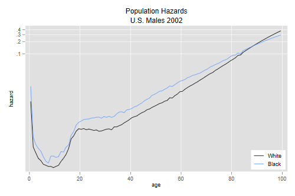
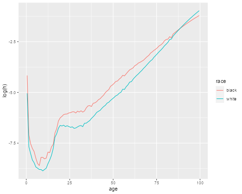
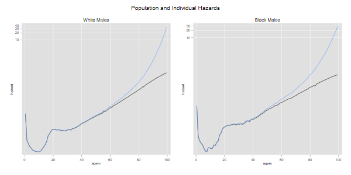
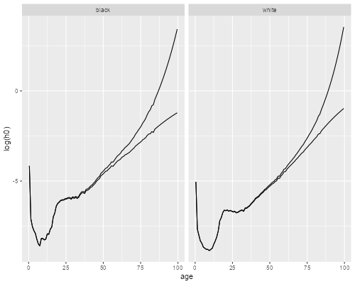
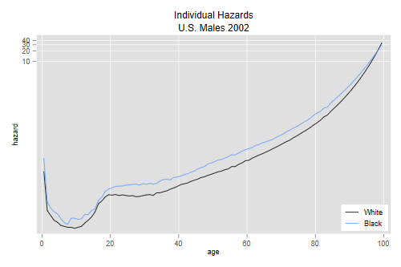
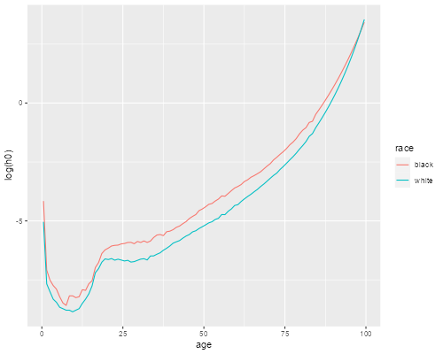

A dynamic version of this plot, where you
can play with the variance of frailty, is available here.
A dynamic version of this plot, where you
can play with the variance of frailty, is available here.I will use the U.S. life tables for white and black males in 2002 to illustrate some calculations on unobserved heterogeneity. Please note that these are period life tables and therefore all calculations apply to hypothetical cohorts subject to then current age-specific mortality rates. Serious work on the mortality crossover would look at cohort, not period, life tables. All I do here is illustrate how individual and population hazards can differ, and how unobserved heterogeneity can produce an apparent crossover.
{% include srtabs.html %}File usWhiteBlackMales2002.dat has side-by-side data for
white and black males, specifically age, and the
lx columns for the two ethnic groups.
. clear . infile age lxw lxb using /// > https://grodri.github.io/datasets/usWhiteBlackMales2002.dat (101 observations read)
> library(dplyr)
> library(ggplot2)
> url <- "https://grodri.github.io/datasets/usWhiteBlackMales2002.dat"
> usw <- read.table(url)
> names(usw) <- c("age", "lxw", "lxb")
> us <- data.frame(
+ race = c(rep("white",nrow(usw)),rep("black",nrow(usw))),
+ age = rep(usw$age, 2),
+ lx = c(usw$lxw, usw$lxb)) |> group_by(race)
I compute the cumulative hazard as negative log survival. I then difference to compute the average hazard in each single year of age except the last. Because the hazard applies to a one-year interval I compute age midpoints by adding 0.5.
. gen Hw = -log(lxw/100000) . gen hw = Hw[_n+1] - Hw (1 missing value generated) . gen Hb = -log(lxb/100000) . gen hb = Hb[_n+1] - Hb (1 missing value generated) . gen agem = age+0.5
> us <- mutate(us, + age = age + 0.5, + H = -log(lx/100000), + h = lead(H) - H)
We are ready to plot the hazars in a log scale
. line hw hb agem, yscale(log) ytitle(hazard) xtitle(age) /// > title(Population Hazards) subtitle(U.S. Males 2002) /// > legend(order(1 "White" 2 "Black") ring(0) pos(5) cols(1)) . graph export uswbmh.png, width(500) replace file uswbmh.png saved as PNG format

> filter(us, !is.na(h)) |>
+ ggplot(aes(age, log(h), color = race)) + geom_line()
> ggsave("uswbmhr.png", width=500/72, height=400/72, dpi=72)

We see that the hazard in 2002 was higher for blacks at every age up to 87, but then the curves cross over.
Consider a hypothetical cohort with individual baseline hazard h0(t) and unobserved heterogeneity, assumed to have a gamma distribution with variance one. What would this hazard have to look like to produce a population hazard of h(t)? We saw in the heterogeneity handout that h0(t) = h(t)exp{H(t)}, see Equation 5 on page 10. We now apply this formula separately to blacks and whites.
Before we do, note that in the data the hazard applies to midpoints whereas the cumulative hazard applies to the lower bounds of each year of age. For consistency I estimate the cumulative hazard at the midpoint by averaging the two extremes. This makes very little difference in the calculations.
. gen h0w = hw * exp( (Hw+Hw[_n+1])/2 ) (1 missing value generated) . gen h0b = hb * exp( (Hb+Hb[_n+1])/2 ) (1 missing value generated)
> us <- mutate(us, + Hm = (H + lead(H))/2, + h0 = h * exp(Hm)) |> filter(!is.na(h0))
The next pair of graphs compares individual and population hazards for each ethnic group:
. line hw h0w agem, yscale(log) ytitle(hazard) title(age) /// > legend(off) title(White Males) name(w, replace) . line hb h0b agem, yscale(log) ytitle(hazard) title(age) /// > legend(off) title(Black Males) name(b, replace) . graph combine w b, xsize(6) ysize(3) /// > title(Population and Individual Hazards) . graph export uswbmhh0.png, width(600) replace file uswbmhh0.png saved as PNG format

> ggplot(us, aes(age, log(h0))) + geom_line() +
+ geom_line(aes(age, log(h))) + facet_grid(. ~ race)
> ggsave("uswbmhh0r.png", width=500/72, height=400/72, dpi=72)

We see how, for each ethnic group, the subject-specific hazard rises with age more steeply than the population-average hazard. The difference is larger for blacks because mortality is higher. If we had used cohort rates the difference would be more noticeable because mortality used to be higher at younger ages.
The final graph compares white and black males using the estimated individual-level baseline hazards:
. line h0w h0b agem, yscale(log) ytitle(hazard) xtitle(age) /// > title(Individual Hazards) subtitle(U.S. Males 2002) /// > legend(order(1 "White" 2 "Black") ring(0) pos(5) cols(1)) . graph export uswbmh0.png, width(500) replace file uswbmh0.png saved as PNG format

> ggplot(us, aes(age, log(h0), color=race)) + geom_line()
> ggsave("uswbmh0r.png", width=500/72, height=400/72, dpi=72)

We see that the cross-over has practically dissappeared, the baseline hazard is higher for whites only after age 98. Increasing the variance of frailty a little would erase that too.
A dynamic version of this plot, where you
can play with the variance of frailty, is available here.